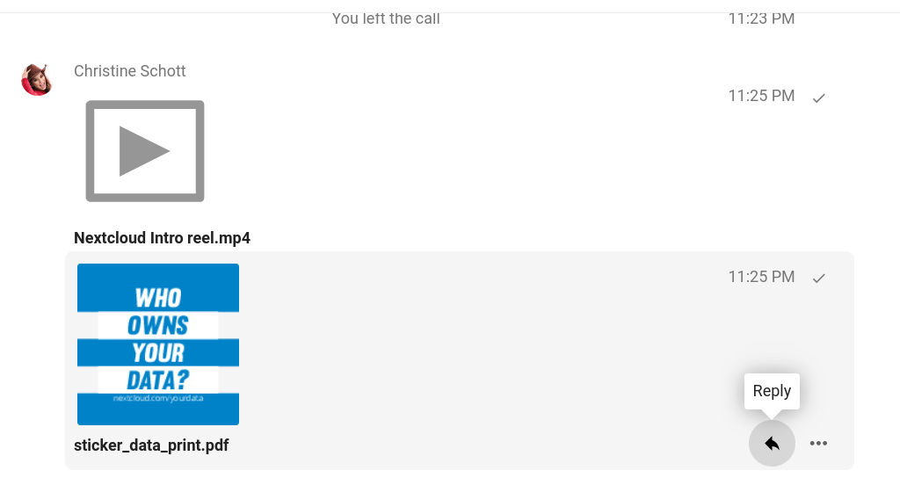

Det grunnleggjande ved Nextcloud Snakke
Nextcloud Snakke let deg chatte og ha video samtaler på din eigen tenar.
Chatter og samtaler foregår i samtaler. Du kan skape kva som helst antal samtaler. Der er to typer samtaler.
Ein-på-ein samtaler. Dette er når du har ein privat chat eller samtale med ein annan Snakke brukar. Du kan ikkje legge til andre personar i denne samtalen eller dele den med ei lenke. Du startar ein direkte ein-på-ein chat ved å sjå etter ein annan brukar i søkefeltet og deretter trykke på namnet deira.
Gruppe samtaler. Bortsett frå personen som skapte samtalen, kan ein gruppesamtale ha kva som helst antal mennesker. Ein gruppe samtale kan bli delt offentleg ved ei lenke, slik at eksterne gjester kan bli med i samtalen. Det kan også listes opp, slik at andre folk på din Nextcloud tenar kan bli med i samtalen.
Skape ein chat
Du kan skape ein direkte, ein-på-ein chat ved å søke etter namnet på ein brukar, ei gruppe eller ein sirkel og trykke på det. For ein enkel brukar, er ein samtale umiddelbart skapt og du kan starte chatten. For ei gruppe eller ein sirkel må du velge namn og innstillingar før du skapar samtalen og legger til deltakarane.

Om du vil skape ein tilpassa gruppe samtale, trykk på «pluss» knappen ved sidan av søkefeltet. Du kan så velje eit namn til samtalen og velje om samtalen skal være open til eksterne brukarar og om andre brukarar på tenaren kan sjå eller bli med i samtalen.

I det andre steget, kan du legge til deltakarar og fullføre skapelsen av samtalen.

Du kan kansellere skapelsen av ein samtale ved å trykke utanfor det kvite meny området når som helst.

Deling av filer i ein chat
Du kan dele filer i ein chat på 3 måter.
Fyrst, kan du enkelt dra og sleppe dei inn i chatten.

Andre, kan du velje ei fil frå dine Nextcloud Filer eller ein fil administrator ved å velje den vetle papir klippen og velje kor du vil plukke opp filen frå.


Du kan leggje til fleire filer til du er ferdig og velger å dele filene.

Alle brukarar vil kunne trykke på filene og sjå dei, redigere dei, eller laste dei ned, uavhengig av om dei har ein brukskonto. Brukarar med ein konto vil få filen automatisk delt med dei medan eksterne gjestar vil få dei delt som ei offentleg lenke.

Innsetting av emoji
Du kan legge til emojier ved å bruke veljaren til venstre for tekst innsetting feltet.

Svarer på meldinger og meir
Du kan svare på ein melding ved å bruke pilen som vises når du henger over ein melding.
I «…» menyen kan du også velje å svare privat. Dette vil opne ein ein-på-ein chat.

Her kan du også skape ei direkte lenke til meldingen eller merke den som ulest slik at du vil bla tilbake dit neste gong du går inn på chatten. Når det er ei fil, kan du sjå filen i Filer.
Administrere ein samtale
You are always moderator in your new conversation. In the participant list you can promote other participants to moderators using the ... menu to the right of their user name, assign them custom permissions or remove them from the conversation.

Moderators can configure the conversation. Select Conversation settings from the gear menu of the conversation on the top to access the settings.

Here you can configure the description, guest access, if the conversation is visible to others on the server and more.

Starte ein samtale
Når du er i ein samtale, kan du starte ein samtale når som helst med «Start samtale» knappen. Andre deltakarar vil bli varsla og kan bli med i samtalen. Om nokon andre allerede har starta ein samtale , vil knappen endre seg til ein grønn «Bli med i samtale» knapp.

During a call, you can mute your microphone and disable your video with the buttons on the right side of the top bar, or using the shortcuts M to mute audio and V to disable video. You can also use the space bar to toggle mute. When you are muted, pressing space will unmute you so you can speak until you let go of the space bar. If you are unmuted, pressing space will mute you until you let go.
Du kan skjule videoen din (nyttig under skjerm deling) med den vetle pilen rett over video strømmen. Ta det tilbake med den vesle pilen igjen.
You can access your settings and choose a different webcam, microphone and other settings in the ... menu in the top bar.


Endre visning i ein samtale
Du kan endre visning i ein samtale med det vesle fire-blokk ikonet på toppen av høgre hjørne mellom promotert-visning og rutenettvistning. Rutenettvisningen vil vise alle som like store og om folkene ikkje passer skjermen, vil knappene som let deg navigere vises til venstre og høgre.

Den promoterte visningen viser snakkaren som stor og dei andre i ei rad nedanfor. Om folkene ikkje passer i skjermen, vil knappane som let deg navigere vises på venstre og høgre side.